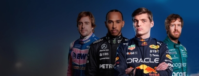
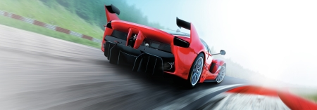

FiveM

FiveM is een opliggende server laag op het bestaande GTA 5. Op FiveM heb je veel verschillende servers meeste hiervan zijn roleplay servers, dat is ook het gene waarvoor ik FiveM gebruik. In deze Roleplay server heb je verschillende kanten. Je kan een overheidsbaan gaan doen of je gaat het criminele circuit in of je houd het lekker legaal bij een baan bij het UWV.
Speeltijd totaal: 1.706,2 uur.
F1 22
F1 22 is een race game waar je zelf een carrière begint in de Formule 1. Hierbij kan je een keuze maken om in de Formule 2 beginnen of om in de Formule 1 te beginnen, hier word dan een contract aangeboden naar je vaardigheden. Daarna als je eenmaal goed ben kan je ook een contract aangeboden krijgen bij een hoger team komen en misschien word je wel wereldkampioen.
Speeltijd totaal: 153,3 uur.
Assetto Corsa
Assetto Corsa (Italiaans voor "Race Setup") is een racesimulatie game ontwikkeld door de Italiaanse video game ontwikkelaar Kunos Simulazioni. Het is ontworpen met de nadruk op een realistische race-ervaring met ondersteuning voor uitgebreide aanpassing en mobiliteit. Daardoor geeft het een realistische rijervaring met een verscheidenheid aan weg- en raceauto's.
Speeltijd totaal: 51 uur.